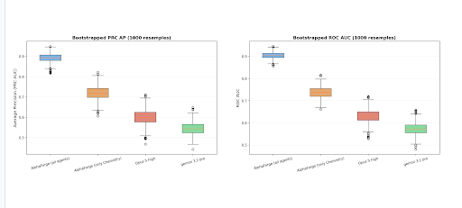

The Difference Scientific Reasoning Makes
A follow-up to Beyond Hit Generation: Solving the Final Compute Bottleneck in AI-Driven Drug Design.
In my last post I argued that generating candidate molecules is becoming a solved compute problem, and that the bottleneck that actually matters is clinical viability: the 90% of trials that fail even after the chemistry looks great. I described AlphaForge as a virtual drug review board: domain-specific agents that reason over a molecule the way a real review committee would, and converge on a calibrated risk score.
The question I get most often is how AlphaForge compares with foundational models. So we measured it.
Why This Is the Right Question to Ask Right Now
Eric Schmidt and Suhas Mahesh made an argument in MIT Technology Review this month that I think is the most important framing in AI-for-science at the moment: the future is agents that reason, not just models that consume data.
Their observation about AlphaFold is the part worth sitting with. AlphaFold worked because the Protein Data Bank existed: roughly 170,000 structures, assembled over 53 years, representing what they estimate as “$21 billion worth of experimental work.” That dataset was the precondition. Most scientific fields have no equivalent, and no realistic path to building one.
Clinical outcome prediction is emphatically one of those fields. There is no Protein Data Bank for clinical failure. Our own manually curated benchmark, assembled painstakingly, one drug at a time, contains 393 labeled outcomes. It is a validation set, not a training corpus, and at that size it could never be one.
You cannot brute-force your way through that with scale. If the data does not exist, the only thing left is to reason well over the data that does. That is precisely the bet AlphaForge makes, and it is why an ablation study is the honest way to test it.
The Experiment
We ran four predictors against the same cohort and scored them identically.
- AlphaForge (all agents), the full board: the biologist, the toxicologist, the clinical pharmacologist, and the medicinal chemist, with the medicinal chemist reconciling all four advisories into a final phase-by-phase probability.
- AlphaForge (only Chemistry), the same platform with the biology, toxicology, and pharmacology agents removed. Structure-only reasoning. This is the ablation that isolates what the reasoning layer contributes, because the chemistry agent alone is already a strong, carefully engineered predictor.
- Claude Opus 5 (high reasoning) and Gemini 3.1 Pro, frontier models evaluated directly on the same inputs.
The cohort is our curated benchmark of approved drugs and Phase 1–3 clinical failures, close to balanced by construction. Leakage controls were enforced throughout: outcome status was withheld from the agents, drug names were stripped, and similarity search against known assets was disabled, so the board has to reason from molecular and mechanistic evidence rather than from recognition. We report bootstrapped distributions over 1,000 resamples rather than single point estimates, because on a cohort this size a single number is close to meaningless.

What the Data Shows
The ordering is clean and the separation is not subtle.
The full board lands around 0.90 median ROC AUC and roughly 0.89 average precision, with a tight interquartile spread. Strip out biology, toxicology, and pharmacology and leave only chemistry, and performance drops to roughly 0.74 ROC AUC and 0.72 average precision. The frontier models, reasoning unassisted over the same information, come in at roughly 0.63 and 0.57 ROC AUC respectively.
Two things are worth pulling out of that.
The first is the ablation itself. Removing three of the four agents costs about 16 points of ROC AUC. The chemistry agent is not a weak component; on its own it is already meaningfully better than either frontier model. But structure-only reasoning has a ceiling, and that ceiling sits well below what the platform achieves when a molecule is interrogated from four independent angles and the disagreements have to be reconciled. The gain is not coming from a better model. It is coming entirely from the structure of the scientific reasoning.
The second is more sobering, and it concerns the baselines. Because the cohort is close to balanced, a coin flip scores about 0.50 average precision and 0.50 ROC AUC. Gemini 3.1 Pro’s distribution sits at roughly 0.57 ROC AUC, above chance, but not by the margin you would want before betting a development program on it. Opus 5 at high reasoning does better, near 0.63, and its lower whisker still reaches down toward 0.55.
I want to be careful about what that does and does not mean, because it would be easy to read it as a knock on the models. It is not. These are exceptional systems and we build on them directly. What the result says is narrower and, I think, more interesting: asking a frontier model “will this drug succeed in the clinic?” in a single pass is the wrong shape of question. It collapses four genuinely distinct expert judgments (is the target biology real, is the therapeutic window survivable, will the PK support a viable dose, is the scaffold developable) into one undifferentiated forward pass, where a confident answer on one dimension can quietly paper over a fatal problem on another. Nobody would run a real drug review board that way.
Reasoning as Architecture
This is what I take Schmidt and Mahesh to be getting at when they call agents “a foundational change” rather than a better tool. The unit of progress stops being the model and starts being the reasoning process you build around it.
In our case the process is specific and deliberate. Four agents evaluate in parallel and independently, each producing its own phase-by-phase probabilities and its own verdict. None of them sees the others’ work first, which matters: it prevents the anchoring you get when one confident opinion arrives before the rest. Only then does a reconciliation pass ingest all four advisories and resolve the contradictions into a final score. The disagreements are not noise to be averaged away. They are the signal. A molecule that every agent likes for different reasons is a genuinely different object from one that survives only because three agents stayed quiet.
What I Am Not Claiming
The Schmidt and Mahesh piece is candid about the limits of agents today: they note that agents “are still liable to hallucinate” and show inconsistent judgment. I would rather be equally candid about the limits of this result.
This is a retrospective benchmark on a few hundred drugs. It is small, and it carries the survivorship bias that any historical drug cohort carries: we are scoring the programs that got far enough to leave a public record. The bootstrap tells you about sampling variance on this cohort; it tells you nothing about whether this cohort represents the next one. Manual curation of clinical outcomes is genuinely hard, and some label noise is unavoidable.
Which is why the number I actually care about is not on this chart. We froze the model in January 2025 and have been scoring readouts as they report, prospectively, where the outcome did not exist when the prediction was made. That is the test that cannot be gamed by curation choices, and it is the one we will keep publishing against. The retrospective work here answers a different and narrower question (what does the reasoning layer contribute?) and it answers it cleanly.
The Bottom Line
Generation is becoming a compute problem. Clinical viability is not, and it will not become one, because the labeled data required to make it one does not exist and will not exist on any timeline that matters. There is no Protein Data Bank for clinical failure, and waiting 53 years to assemble one is not a strategy.
What the ablation says is that this is survivable. On a cohort of a few hundred labels, structured scientific reasoning moved performance from roughly 0.57 to roughly 0.90 ROC AUC. That gain came from how the judgment is decomposed: four independent expert evaluations, asked in the right order, made to argue until they reconcile.
To the teams building generation engines and to everyone working on agentic systems for science: this is the half of the problem that scale will not solve for you. I would like to talk to you about it.
Curious about the full breakdown of how we score clinical viability? Read more about the AlphaForge platform at https://www.reneubio.com/.